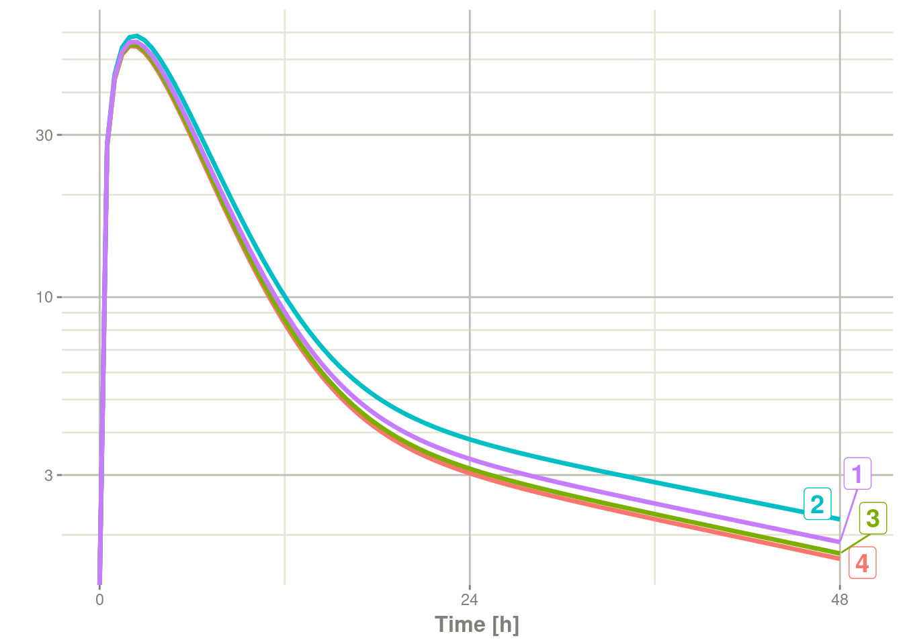
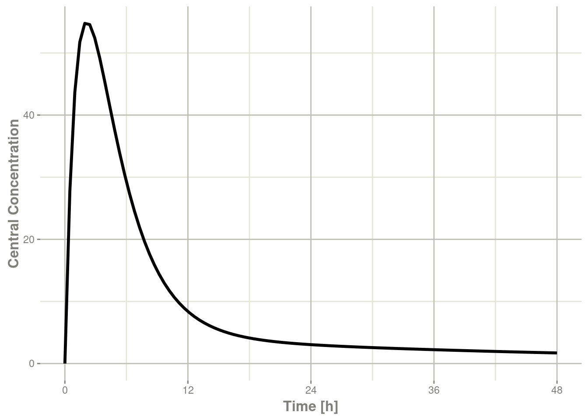
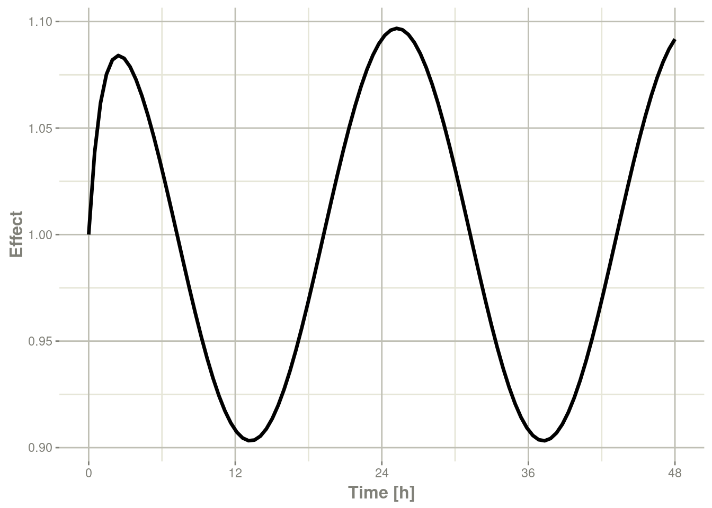
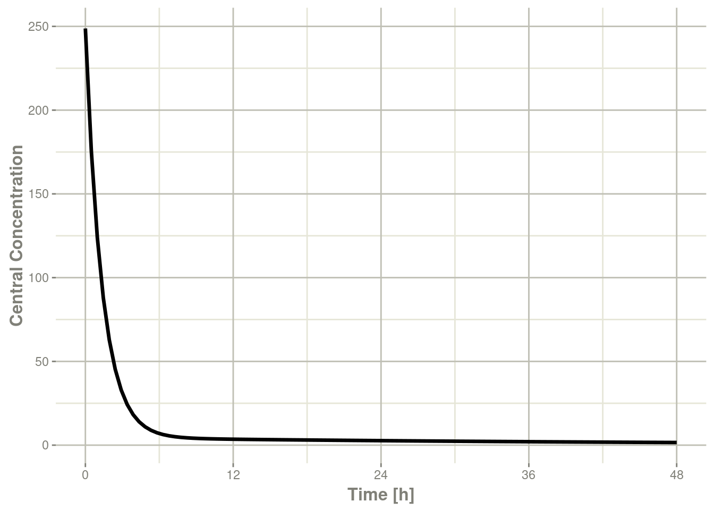
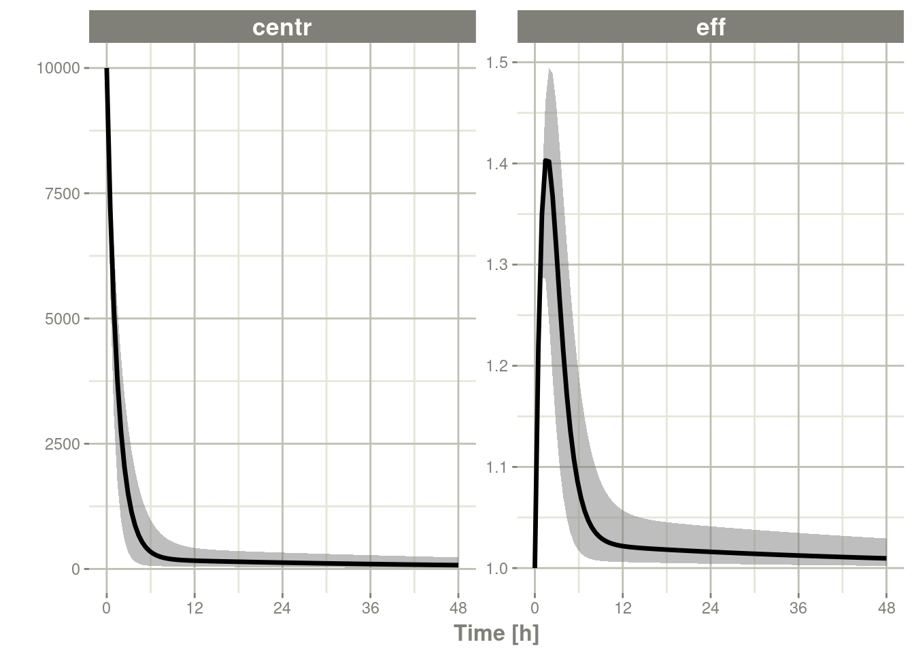
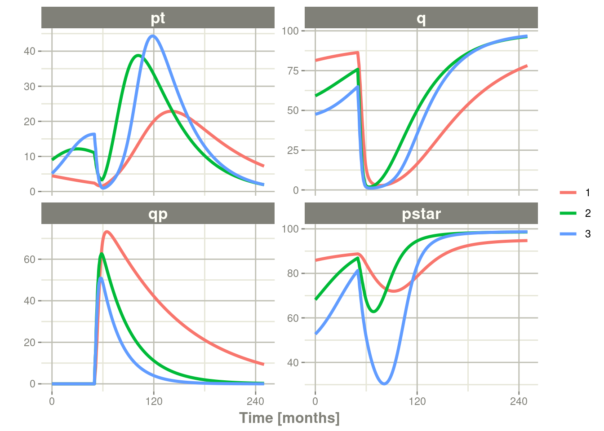
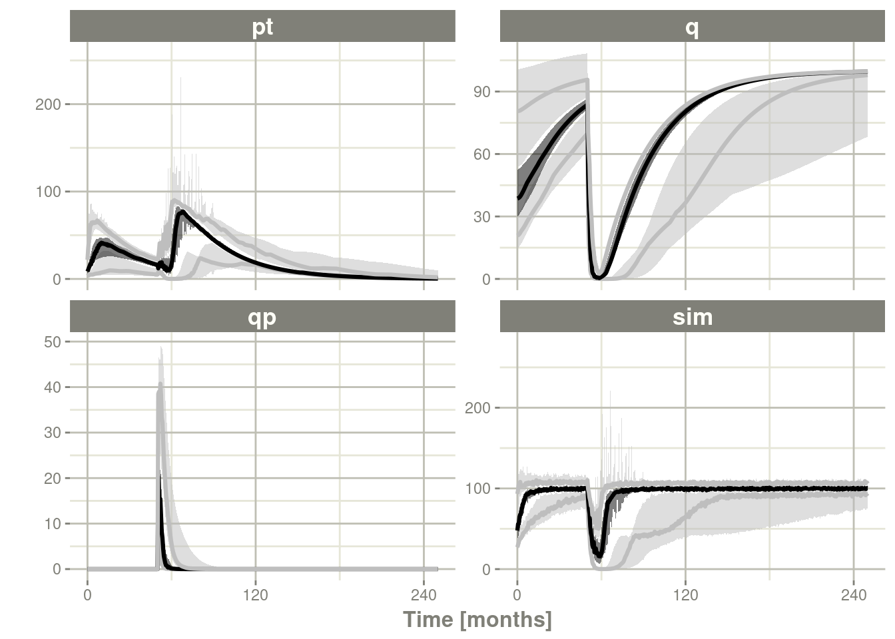
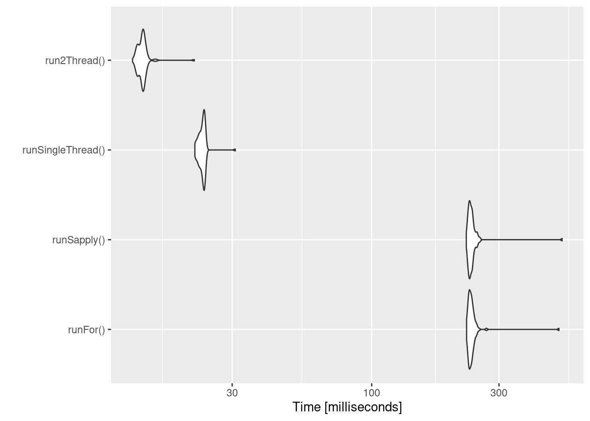
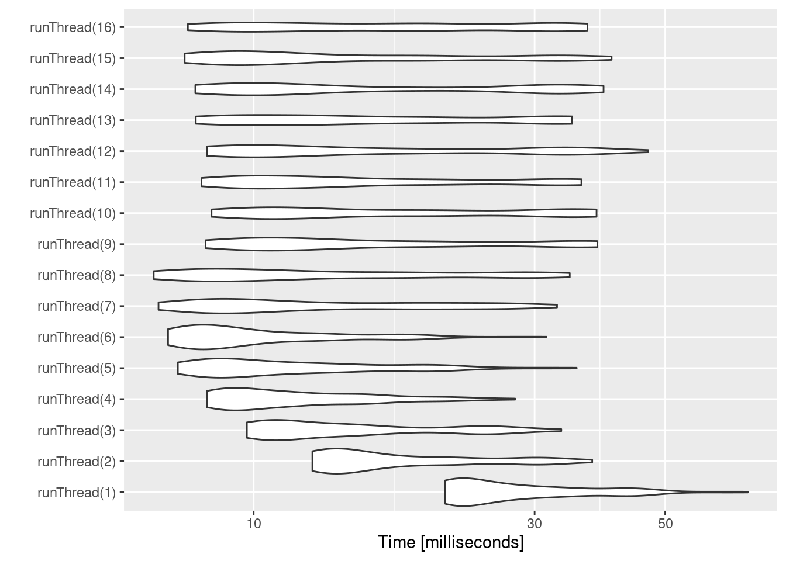

Chapter 13 Advanced & Miscellaneous Topics
This covers advanced or miscellaneous topics in rxode2
13.1 Covariates in rxode2
13.1.1 Individual Covariates
If there is an individual covariate you wish to solve for you may specify it by the iCov dataset:
library(rxode2)
library(units)
library(xgxr)
mod3 <- function() {
ini({
TKA <- 2.94E-01
#### Clearance with individuals
TCL <- 1.86E+01
TV2 <-4.02E+01
TQ <-1.05E+01
TV3 <-2.97E+02
TKin <- 1
TKout <- 1
TEC50 <-200
})
model({
KA <- TKA
CL <- TCL * (WT / 70) ^ 0.75
V2 <- TV2
Q <- TQ
V3 <- TV3
Kin <- TKin
Kout <- TKout
EC50 <- TEC50
Tz <- 8
amp <- 0.1
C2 <- central/V2
C3 <- peri/V3
d/dt(depot) <- -KA*depot
d/dt(central) <- KA*depot - CL*C2 - Q*C2 + Q*C3
d/dt(peri) <- Q*C2 - Q*C3
d/dt(eff) <- Kin - Kout*(1-C2/(EC50+C2))*eff
eff(0) <- 1 ## This specifies that the effect compartment starts at 1.
})
}
ev <- et(amount.units="mg", time.units="hours") %>%
et(amt=10000, cmt=1) %>%
et(0,48,length.out=100) %>%
et(id=1:4)
set.seed(10)
rxSetSeed(10)
#### Now use iCov to simulate a 4-id sample
r1 <- solve(mod3, ev,
### Create individual covariate data-frame
iCov=data.frame(id=1:4, WT=rnorm(4, 70, 10)))#> using C compiler: ‘gcc (Ubuntu 11.4.0-1ubuntu1~22.04) 11.4.0’print(r1)#> -- Solved rxode2 object --
#> -- Parameters ($params): --
#> TKA TCL TV2 TQ TV3 TKin TKout TEC50 Tz amp
#> 0.294 18.600 40.200 10.500 297.000 1.000 1.000 200.000 8.000 0.100
#> -- Initial Conditions ($inits): --
#> depot central peri eff
#> 0 0 0 1
#> -- First part of data (object): --
#> # A tibble: 400 x 17
#> id time KA CL V2 Q V3 Kin Kout EC50 C2 C3 depot
#> <int> [h] <dbl> <dbl> <dbl> <dbl> <dbl> <dbl> <dbl> <dbl> <dbl> <dbl> <dbl>
#> 1 1 0 0.294 18.6 40.2 10.5 297 1 1 200 0 0 10000
#> 2 1 0.485 0.294 18.6 40.2 10.5 297 1 1 200 27.8 0.257 8671.
#> 3 1 0.970 0.294 18.6 40.2 10.5 297 1 1 200 43.7 0.873 7519.
#> 4 1 1.45 0.294 18.6 40.2 10.5 297 1 1 200 51.7 1.68 6520.
#> 5 1 1.94 0.294 18.6 40.2 10.5 297 1 1 200 54.7 2.56 5654.
#> 6 1 2.42 0.294 18.6 40.2 10.5 297 1 1 200 54.5 3.45 4903.
#> # i 394 more rows
#> # i 4 more variables: central <dbl>, peri <dbl>, eff <dbl>, WT <dbl>plot(r1, C2, log="y")#> Warning: Transformation introduced infinite values in continuous y-axis
13.1.2 Time Varying Covariates
Covariates are easy to specify in rxode2, you can specify them as a variable. Time-varying covariates, like clock time in a circadian rhythm model, can also be used. Extending the indirect response model already discussed, we have:
library(rxode2)
library(units)
mod4 <- mod3 %>%
model(d/dt(eff) <- Kin - Kout*(1-C2/(EC50+C2))*eff) %>%
model(-Kin) %>%
model(Kin <- TKin + amp *cos(2*pi*(ctime-Tz)/24), append=C2, cov="ctime")
ev <- et(amountUnits="mg", timeUnits="hours") %>%
et(amt=10000, cmt=1) %>%
et(0,48,length.out=100)
#### Create data frame of 8 am dosing for the first dose This is done
#### with base R but it can be done with dplyr or data.table
ev$ctime <- (ev$time+set_units(8,hr)) %% 24
ev$WT <- 70Now there is a covariate present in the event dataset, the system can be solved by combining the dataset and the model:
r1 <- solve(mod4, ev, covsInterpolation="linear")
print(r1)
#> -- Solved rxode2 object --
#> -- Parameters ($params): --
#> TKA TCL TV2 TQ TV3 TKout TEC50
#> 0.294000 18.600000 40.200000 10.500000 297.000000 1.000000 200.000000
#> TKin Tz amp pi
#> 1.000000 8.000000 0.100000 3.141593
#> -- Initial Conditions ($inits): --
#> depot central peri eff
#> 0 0 0 1
#> -- First part of data (object): --
#> # A tibble: 100 x 17
#> time KA CL V2 Q V3 Kout EC50 C2 Kin C3 depot
#> [h] <dbl> <dbl> <dbl> <dbl> <dbl> <dbl> <dbl> <dbl> <dbl> <dbl> <dbl>
#> 1 0 0.294 18.6 40.2 10.5 297 1 200 0 1.1 0 10000
#> 2 0.485 0.294 18.6 40.2 10.5 297 1 200 27.8 1.10 0.257 8671.
#> 3 0.970 0.294 18.6 40.2 10.5 297 1 200 43.7 1.10 0.874 7519.
#> 4 1.45 0.294 18.6 40.2 10.5 297 1 200 51.8 1.09 1.68 6520.
#> 5 1.94 0.294 18.6 40.2 10.5 297 1 200 54.8 1.09 2.56 5654.
#> 6 2.42 0.294 18.6 40.2 10.5 297 1 200 54.6 1.08 3.45 4903.
#> # i 94 more rows
#> # i 5 more variables: central <dbl>, peri <dbl>, eff <dbl>, ctime [h], WT <dbl>When solving ODE equations, the solver may sample times outside of the
data. When this happens, this ODE solver can use linear interpolation
between the covariate values. It is equivalent to R’s approxfun with
method="linear".
plot(r1,C2, ylab="Central Concentration")
plot(r1,eff) + ylab("Effect") + xlab("Time")
Note that the linear approximation in this case leads to some kinks in the solved system at 24-hours where the covariate has a linear interpolation between near 24 and near 0. While linear seems reasonable, cases like clock time make other interpolation methods more attractive.
In rxode2 the default covariate interpolation is be the last
observation carried forward (locf), or constant approximation. This is
equivalent to R’s approxfun with method="constant".
r1 <- solve(mod4, ev,covsInterpolation="locf")
print(r1)
#> -- Solved rxode2 object --
#> -- Parameters ($params): --
#> TKA TCL TV2 TQ TV3 TKout TEC50
#> 0.294000 18.600000 40.200000 10.500000 297.000000 1.000000 200.000000
#> TKin Tz amp pi
#> 1.000000 8.000000 0.100000 3.141593
#> -- Initial Conditions ($inits): --
#> depot central peri eff
#> 0 0 0 1
#> -- First part of data (object): --
#> # A tibble: 100 x 17
#> time KA CL V2 Q V3 Kout EC50 C2 Kin C3 depot
#> [h] <dbl> <dbl> <dbl> <dbl> <dbl> <dbl> <dbl> <dbl> <dbl> <dbl> <dbl>
#> 1 0 0.294 18.6 40.2 10.5 297 1 200 0 1.1 0 10000
#> 2 0.485 0.294 18.6 40.2 10.5 297 1 200 27.8 1.10 0.257 8671.
#> 3 0.970 0.294 18.6 40.2 10.5 297 1 200 43.7 1.10 0.874 7519.
#> 4 1.45 0.294 18.6 40.2 10.5 297 1 200 51.8 1.09 1.68 6520.
#> 5 1.94 0.294 18.6 40.2 10.5 297 1 200 54.8 1.09 2.56 5654.
#> 6 2.42 0.294 18.6 40.2 10.5 297 1 200 54.6 1.08 3.45 4903.
#> # i 94 more rows
#> # i 5 more variables: central <dbl>, peri <dbl>, eff <dbl>, ctime [h], WT <dbl>which gives the following plots:
plot(r1,C2, ylab="Central Concentration", xlab="Time")
plot(r1,eff, ylab="Effect", xlab="Time")
In this case, the plots seem to be smoother.
You can also use NONMEM’s preferred interpolation style of next observation carried backward (NOCB):
r1 <- solve(mod4, ev,covsInterpolation="nocb")
print(r1)
#> -- Solved rxode2 object --
#> -- Parameters ($params): --
#> TKA TCL TV2 TQ TV3 TKout TEC50
#> 0.294000 18.600000 40.200000 10.500000 297.000000 1.000000 200.000000
#> TKin Tz amp pi
#> 1.000000 8.000000 0.100000 3.141593
#> -- Initial Conditions ($inits): --
#> depot central peri eff
#> 0 0 0 1
#> -- First part of data (object): --
#> # A tibble: 100 x 17
#> time KA CL V2 Q V3 Kout EC50 C2 Kin C3 depot
#> [h] <dbl> <dbl> <dbl> <dbl> <dbl> <dbl> <dbl> <dbl> <dbl> <dbl> <dbl>
#> 1 0 0.294 18.6 40.2 10.5 297 1 200 0 1.1 0 10000
#> 2 0.485 0.294 18.6 40.2 10.5 297 1 200 27.8 1.10 0.257 8671.
#> 3 0.970 0.294 18.6 40.2 10.5 297 1 200 43.7 1.10 0.874 7519.
#> 4 1.45 0.294 18.6 40.2 10.5 297 1 200 51.8 1.09 1.68 6520.
#> 5 1.94 0.294 18.6 40.2 10.5 297 1 200 54.8 1.09 2.56 5654.
#> 6 2.42 0.294 18.6 40.2 10.5 297 1 200 54.6 1.08 3.45 4903.
#> # i 94 more rows
#> # i 5 more variables: central <dbl>, peri <dbl>, eff <dbl>, ctime [h], WT <dbl>which gives the following plots:
plot(r1,C2, ylab="Central Concentration", xlab="Time")
plot(r1,eff, ylab="Effect", xlab="Time")
13.2 Shiny and rxode2
13.2.1 Facilities for generating R shiny applications
An example of creating an
R shiny application to interactively
explore responses of various complex dosing regimens is available at
http://qsp.engr.uga.edu:3838/rxode2/RegimenSimulator. Shiny
applications like this one may be programmatically created with the
experimental function genShinyApp.template().
The above application includes widgets for varying the dose, dosing regimen, dose cycle, and number of cycles.
genShinyApp.template(appDir = "shinyExample", verbose=TRUE)
library(shiny)
runApp("shinyExample")
13.3 Using rxode2 with a pipeline
13.3.1 Setting up the rxode2 model for the pipeline
In this example we will show how to use rxode2 in a simple pipeline.
We can start with a model that can be used for the different simulation workflows that rxode2 can handle:
library(rxode2)
Ribba2012 <- function() {
ini({
k = 100
tkde = 0.24
eta.tkde = 0
tkpq = 0.0295
eta.kpq = 0
tkqpp = 0.0031
eta.kqpp = 0
tlambdap = 0.121
eta.lambdap = 0
tgamma = 0.729
eta.gamma = 0
tdeltaqp = 0.00867
eta.deltaqp = 0
prop.sd <- 0
tpt0 = 7.13
eta.pt0 = 0
tq0 = 41.2
eta.q0 = 0
})
model({
kde ~ tkde*exp(eta.tkde)
kpq ~ tkpq * exp(eta.kpq)
kqpp ~ tkqpp * exp(eta.kqpp)
lambdap ~ tlambdap*exp(eta.lambdap)
gamma ~ tgamma*exp(eta.gamma)
deltaqp ~ tdeltaqp*exp(eta.deltaqp)
d/dt(c) = -kde * c
d/dt(pt) = lambdap * pt *(1-pstar/k) + kqpp*qp -
kpq*pt - gamma*c*kde*pt
d/dt(q) = kpq*pt -gamma*c*kde*q
d/dt(qp) = gamma*c*kde*q - kqpp*qp - deltaqp*qp
#### initial conditions
pt0 ~ tpt0*exp(eta.pt0)
q0 ~ tq0*exp(eta.q0)
pt(0) = pt0
q(0) = q0
pstar <- (pt+q+qp)
pstar ~ prop(prop.sd)
})
}This is a tumor growth model described in Ribba 2012. In this case, we
compiled the model into an R object Ribba2012, though in an rxode2
simulation pipeline, you do not have to assign the compiled model to
any object, though I think it makes sense.
13.3.2 Simulating one event table
Simulating a single event table is quite simple:
- You pipe the rxode2 simulation object into an event table object by
et().
- When the events are completely specified, you simply solve the ODE system with
rxSolve(). - In this case you can pipe the output to
plot()to conveniently view the results. - Note for the plot we are only selecting the selecting following:
pt(Proliferative Tissue),q(quiescent tissue)qp(DNA-Damaged quiescent tissue) andpstar(total tumor tissue)
Ribba2012 %>% # Use rxode2
et(time.units="months") %>% # Pipe to a new event table
et(amt=1, time=50, until=58, ii=1.5) %>% # Add dosing every 1.5 months
et(0, 250, by=0.5) %>% # Add some sampling times (not required)
rxSolve() %>% # Solve the simulation
plot(pt, q, qp, pstar) # Plot it, plotting the variables of interest
13.3.3 Simulating multiple subjects from a single event table
13.3.3.1 Simulating with between subject variability
The next sort of simulation that may be useful is simulating multiple
patients with the same treatments. In this case, we will use the
omega matrix specified by the paper:
#### Add CVs from paper for individual simulation
#### Uses exact formula:
lognCv = function(x){log((x/100)^2+1)}
library(lotri)
#### Now create omega matrix
#### I'm using lotri to quickly specify names/diagonals
omega <- lotri(eta.pt0 ~ lognCv(94),
eta.q0 ~ lognCv(54),
eta.lambdap ~ lognCv(72),
eta.kqp ~ lognCv(76),
eta.kqpp ~ lognCv(97),
eta.deltaqp ~ lognCv(115),
eta.tkde ~ lognCv(70))
omega
#> eta.pt0 eta.q0 eta.lambdap eta.kqp eta.kqpp eta.deltaqp
#> eta.pt0 0.6331848 0.0000000 0.0000000 0.0000000 0.0000000 0.0000000
#> eta.q0 0.0000000 0.2558818 0.0000000 0.0000000 0.0000000 0.0000000
#> eta.lambdap 0.0000000 0.0000000 0.4176571 0.0000000 0.0000000 0.0000000
#> eta.kqp 0.0000000 0.0000000 0.0000000 0.4559047 0.0000000 0.0000000
#> eta.kqpp 0.0000000 0.0000000 0.0000000 0.0000000 0.6631518 0.0000000
#> eta.deltaqp 0.0000000 0.0000000 0.0000000 0.0000000 0.0000000 0.8426442
#> eta.tkde 0.0000000 0.0000000 0.0000000 0.0000000 0.0000000 0.0000000
#> eta.tkde
#> eta.pt0 0.0000000
#> eta.q0 0.0000000
#> eta.lambdap 0.0000000
#> eta.kqp 0.0000000
#> eta.kqpp 0.0000000
#> eta.deltaqp 0.0000000
#> eta.tkde 0.3987761With this information, it is easy to simulate 3 subjects from the model-based parameters:
set.seed(1089)
rxSetSeed(1089)
Ribba2012 %>% # Use rxode2
et(time.units="months") %>% # Pipe to a new event table
et(amt=1, time=50, until=58, ii=1.5) %>% # Add dosing every 1.5 months
et(0, 250, by=0.5) %>% # Add some sampling times (not required)
rxSolve(nSub=3, omega=omega) %>% # Solve the simulation
plot(pt, q, qp, pstar) # Plot it, plotting the variables of interest
Note there are two different things that were added to this simulation:
- nSub to specify how many subjects are in the model
- omega to specify the between subject variability.
13.3.3.2 Simulation with unexplained variability
You can even add unexplained variability quite easily:
Ribba2012 %>% # Use rxode2
ini(prop.sd=0.05) %>% # change variability
et(time.units="months") %>% # Pipe to a new event table
et(amt=1, time=50, until=58, ii=1.5) %>% # Add dosing every 1.5 months
et(0, 250, by=0.5) %>% # Add some sampling times (not required)
rxSolve(nSub=3, omega=omega) %>%
plot(pt, q, qp, sim) # Plot it, plotting the variables of interest
### note that sim is the simulated pstar since this is simulated from the
### model with a nlmixr2 endpointIn this case we only added the sigma matrix to have unexplained
variability on the pstar or total tumor tissue.
You can even simulate with uncertainty in the theta omega and sigma values if you wish.
13.3.3.3 Simulation with uncertainty in all the parameters (by matrices)
If we assume these parameters came from 95 subjects with 8
observations apiece, the degrees of freedom for the omega matrix would
be 95, and the degrees of freedom of the sigma matrix would be
95*8=760 because 95 items informed the omega matrix, and 760
items informed the sigma matrix.
Ribba2012 %>% # Use rxode2
ini(prop.sd = 0.05) %>%
et(time.units="months") %>% # Pipe to a new event table
et(amt=1, time=50, until=58, ii=1.5) %>% # Add dosing every 1.5 months
et(0, 250, by=0.5) %>% # Add some sampling times (not required)
rxSolve(nSub=3, nStud=3, omega=omega,
dfSub=760, dfObs=95) %>% # Solve the simulation
plot(pt, q, qp, sim) # Plot it, plotting the variables of interest
Often in simulations we have a full covariance matrix for the fixed
effect parameters. In this case, we do not have the matrix, but it
could be specified by thetaMat.
While we do not have a full covariance matrix, we can have information about the diagonal elements of the covariance matrix from the model paper. These can be converted as follows:
rseVar <- function(est, rse){
return(est*rse/100)^2
}
thetaMat <- lotri(tpt0 ~ rseVar(7.13,25),
tq0 ~ rseVar(41.2,7),
tlambdap ~ rseVar(0.121, 16),
tkqpp ~ rseVar(0.0031, 35),
tdeltaqp ~ rseVar(0.00867, 21),
tgamma ~ rseVar(0.729, 37),
tkde ~ rseVar(0.24, 33)
)
thetaMat
#> tpt0 tq0 tlambdap tkqpp tdeltaqp tgamma tkde
#> tpt0 1.7825 0.000 0.00000 0.000000 0.0000000 0.00000 0.0000
#> tq0 0.0000 2.884 0.00000 0.000000 0.0000000 0.00000 0.0000
#> tlambdap 0.0000 0.000 0.01936 0.000000 0.0000000 0.00000 0.0000
#> tkqpp 0.0000 0.000 0.00000 0.001085 0.0000000 0.00000 0.0000
#> tdeltaqp 0.0000 0.000 0.00000 0.000000 0.0018207 0.00000 0.0000
#> tgamma 0.0000 0.000 0.00000 0.000000 0.0000000 0.26973 0.0000
#> tkde 0.0000 0.000 0.00000 0.000000 0.0000000 0.00000 0.0792Now we have a thetaMat to represent the uncertainty in the theta
matrix, as well as the other pieces in the simulation. Typically you
can put this information into your simulation with the thetaMat
matrix.
With such large variability in theta it is easy to sample a negative
rate constant, which does not make sense. For example:
Ribba2012 %>% # Use rxode2
ini(prop.sd = 0.05) %>%
et(time.units="months") %>% # Pipe to a new event table
et(amt=1, time=50, until=58, ii=1.5) %>% # Add dosing every 1.5 months
et(0, 250, by=0.5) %>% # Add some sampling times (not required)
rxSolve(nSub=2, nStud=2, omega=omega,
thetaMat=thetaMat,
dfSub=760, dfObs=95) %>% # Solve the simulation
plot(pt, q, qp, pstar) # Plot it, plotting the variables of interest
#> ℹ change initial estimate of `prop.sd` to `0.05`
#> unhandled error message: EE:[lsoda] 70000 steps taken before reaching tout
#> @(lsoda.c:750
#> Warning message:
#> In rxSolve_(object, .ctl, .nms, .xtra, params, events, inits, setupOnly = .setupOnly) :
#> Some ID(s) could not solve the ODEs correctly; These values are replaced with NA.To correct these problems you simply need to use a truncated
multivariate normal and specify the reasonable ranges for the
parameters. For theta this is specified by thetaLower and
thetaUpper. Similar parameters are there for the other matrices:
omegaLower, omegaUpper, sigmaLower and sigmaUpper. These may
be named vectors, one numeric value, or a numeric vector matching the
number of parameters specified in the thetaMat matrix.
In this case the simulation simply has to be modified to have
thetaLower=0 to make sure all rates are positive:
Ribba2012 %>% # Use rxode2
ini(prop.sd = 0.05) %>%
et(time.units="months") %>% # Pipe to a new event table
et(amt=1, time=50, until=58, ii=1.5) %>% # Add dosing every 1.5 months
et(0, 250, by=0.5) %>% # Add some sampling times (not required)
rxSolve(nSub=2, nStud=2, omega=omega,
thetaMat=thetaMat,
thetaLower=0, # Make sure the rates are reasonable
dfSub=760, dfObs=95) %>% # Solve the simulation
plot(pt, q, qp, sim) # Plot it, plotting the variables of interest
13.3.4 Summarizing the simulation output
While it is easy to use dplyr and data.table to perform your own
summary of simulations, rxode2 also provides this ability by the
confint function.
#### This takes a little more time; Most of the time is the summary
#### time.
sim0 <- Ribba2012 %>% # Use rxode2
ini(prop.sd=0.05) %>%
et(time.units="months") %>% # Pipe to a new event table
et(amt=1, time=50, until=58, ii=1.5) %>% # Add dosing every 1.5 months
et(0, 250, by=0.5) %>% # Add some sampling times (not required)
rxSolve(nSub=10, nStud=10, omega=omega,
thetaMat=thetaMat,
thetaLower=0, # Make sure the rates are reasonable
dfSub=760, dfObs=95) %>% # Solve the simulation
confint(c("pt","q","qp","sim"),level=0.90); # Create Simulation intervals
sim0 %>% plot() # Plot the simulation intervals
13.3.4.1 Simulating from a data-frame of parameters
While the simulation from matrices can be very useful and a fast way
to simulate information, sometimes you may want to simulate more
complex scenarios. For instance, there may be some reason to believe
that tkde needs to be above tlambdap, therefore these need to be
simulated more carefully. You can generate the data frame in whatever
way you want. The internal method of simulating the new parameters is
exported too.
library(dplyr)
Ribba2012 <- Ribba2012()
### Convert to classic rxode2 model with ini attached
r <- Ribba2012$simulationIniModel
pars <- rxInits(r)
pars <- pars[regexpr("(prop|eta)",names(pars)) == -1]
print(pars)
#> k tkde tkpq tkqpp tlambdap tgamma
#> 1.00e+02 2.40e-01 2.95e-02 3.10e-03 1.21e-01 7.29e-01
#> tdeltaqp tpt0 tq0 rxerr.pstar
#> 8.67e-03 7.13e+00 4.12e+01 1.00e+00
#### This is the exported method for simulation of Theta/Omega internally in rxode2
df <- rxSimThetaOmega(params=pars, omega=omega,dfSub=760,
thetaMat=thetaMat, thetaLower=0, nSub=60,nStud=60) %>%
filter(tkde > tlambdap) %>% as_tibble()
#### You could also simulate more and bind them together to a data frame.
print(df)
#> # A tibble: 2,280 x 17
#> k tkde tkpq tkqpp tlambdap tgamma tdeltaqp tpt0 tq0 rxerr.pstar
#> <dbl> <dbl> <dbl> <dbl> <dbl> <dbl> <dbl> <dbl> <dbl> <dbl>
#> 1 100 2.98 0.0295 1.09 1.83 1.19 1.61 7.40 41.8 1
#> 2 100 2.98 0.0295 1.09 1.83 1.19 1.61 7.40 41.8 1
#> 3 100 2.98 0.0295 1.09 1.83 1.19 1.61 7.40 41.8 1
#> 4 100 2.98 0.0295 1.09 1.83 1.19 1.61 7.40 41.8 1
#> 5 100 2.98 0.0295 1.09 1.83 1.19 1.61 7.40 41.8 1
#> 6 100 2.98 0.0295 1.09 1.83 1.19 1.61 7.40 41.8 1
#> 7 100 2.98 0.0295 1.09 1.83 1.19 1.61 7.40 41.8 1
#> 8 100 2.98 0.0295 1.09 1.83 1.19 1.61 7.40 41.8 1
#> 9 100 2.98 0.0295 1.09 1.83 1.19 1.61 7.40 41.8 1
#> 10 100 2.98 0.0295 1.09 1.83 1.19 1.61 7.40 41.8 1
#> # i 2,270 more rows
#> # i 7 more variables: eta.pt0 <dbl>, eta.q0 <dbl>, eta.lambdap <dbl>,
#> # eta.kqp <dbl>, eta.kqpp <dbl>, eta.deltaqp <dbl>, eta.tkde <dbl>
#### Quick check to make sure that all the parameters are OK.
all(df$tkde>df$tlambdap)
#> [1] TRUE
sim1 <- r %>% # Use rxode2
et(time.units="months") %>% # Pipe to a new event table
et(amt=1, time=50, until=58, ii=1.5) %>% # Add dosing every 1.5 months
et(0, 250, by=0.5) %>% # Add some sampling times (not required)
rxSolve(df)
#### Note this information looses information about which ID is in a
#### "study", so it summarizes the confidence intervals by dividing the
#### subjects into sqrt(#subjects) subjects and then summarizes the
#### confidence intervals
sim2 <- sim1 %>% confint(c("pt","q","qp","sim"),level=0.90); # Create Simulation intervals
save(sim2, file = file.path(system.file(package = "rxode2"), "pipeline-sim2.rds"), version = 2)
sim2 %>% plot()
13.4 Speeding up rxode2
13.4.1 A note about the speed of the functional form for rxode2
The functional form has the benefit that it is what is supported by nlmixr2 and therefore there is only one interface between solving and estimating, and it takes some computation time to get to the underlying “classic” simulation code.
These models are in the form of:
library(rxode2)
mod1 <- function() {
ini({
KA <- 0.3
CL <- 7
V2 <- 40
Q <- 10
V3 <- 300
Kin <- 0.2
Kout <- 0.2
EC50 <- 8
})
model({
C2 = centr/V2
C3 = peri/V3
d/dt(depot) = -KA*depot
d/dt(centr) = KA*depot - CL*C2 - Q*C2 + Q*C3
d/dt(peri) = Q*C2 - Q*C3
d/dt(eff) = Kin - Kout*(1-C2/(EC50+C2))*eff
eff(0) = 1
})
}Or you can also specify the end-points for simulation/estimation just
like nlmixr2:
mod2 <- function() {
ini({
TKA <- 0.3
TCL <- 7
TV2 <- 40
TQ <- 10
TV3 <- 300
TKin <- 0.2
TKout <- 0.2
TEC50 <- 8
eta.cl + eta.v ~ c(0.09,
0.08, 0.25)
c2.prop.sd <- 0.1
eff.add.sd <- 0.1
})
model({
KA <- TKA
CL <- TCL*exp(eta.cl)
V2 <- TV2*exp(eta.v)
Q <- TQ
V3 <- TV3
Kin <- TKin
Kout <- TKout
EC50 <- TEC50
C2 = centr/V2
C3 = peri/V3
d/dt(depot) = -KA*depot
d/dt(centr) = KA*depot - CL*C2 - Q*C2 + Q*C3
d/dt(peri) = Q*C2 - Q*C3
d/dt(eff) = Kin - Kout*(1-C2/(EC50+C2))*eff
eff(0) = 1
C2 ~ prop(c2.prop.sd)
eff ~ add(eff.add.sd)
})
}For every solve, there is a compile (or a cached compile) of the
underlying model. If you wish to speed this process up you can use
the two underlying rxode2 classic models. This takes two steps:
Parsing/evaluating the model
Creating the simulation model
The first step can be done by rxode2(mod1) or mod1() (or for the second model too).
mod1 <- mod1()
mod2 <- rxode2(mod2)The second step is to create the underlying “classic” rxode2 model,
which can be done with two different methods:$simulationModel and
$simulationIniModel. The $simulationModel will provide the
simulation code without the initial conditions pre-pended, the
$simulationIniModel will pre-pend the values. When the endpoints
are specified, the simulation code for each endpoint is also output.
You can see the differences below:
summary(mod1$simulationModel)
#> rxode2 2.0.13.9000 model named rx_a494135736b19051a1ab9bccf8fb694c model (ready).
#> DLL: /tmp/RtmpbXPxP7/rxode2/rx_a494135736b19051a1ab9bccf8fb694c__.rxd/rx_a494135736b19051a1ab9bccf8fb694c_.so
#> NULL
#>
#> Calculated Variables:
#> [1] "C2" "C3"
#> -- rxode2 Model Syntax --
#> rxode2({
#> param(KA, CL, V2, Q, V3, Kin, Kout, EC50)
#> C2 = centr/V2
#> C3 = peri/V3
#> d/dt(depot) = -KA * depot
#> d/dt(centr) = KA * depot - CL * C2 - Q * C2 + Q * C3
#> d/dt(peri) = Q * C2 - Q * C3
#> d/dt(eff) = Kin - Kout * (1 - C2/(EC50 + C2)) * eff
#> eff(0) = 1
#> })
summary(mod1$simulationIniModel)
#> rxode2 2.0.13.9000 model named rx_e8a4518d378b3595346005616a2c2d3f model (ready).
#> DLL: /tmp/RtmpbXPxP7/rxode2/rx_e8a4518d378b3595346005616a2c2d3f__.rxd/rx_e8a4518d378b3595346005616a2c2d3f_.so
#> NULL
#>
#> Calculated Variables:
#> [1] "C2" "C3"
#> -- rxode2 Model Syntax --
#> rxode2({
#> param(KA, CL, V2, Q, V3, Kin, Kout, EC50)
#> KA = 0.3
#> CL = 7
#> V2 = 40
#> Q = 10
#> V3 = 300
#> Kin = 0.2
#> Kout = 0.2
#> EC50 = 8
#> C2 = centr/V2
#> C3 = peri/V3
#> d/dt(depot) = -KA * depot
#> d/dt(centr) = KA * depot - CL * C2 - Q * C2 + Q * C3
#> d/dt(peri) = Q * C2 - Q * C3
#> d/dt(eff) = Kin - Kout * (1 - C2/(EC50 + C2)) * eff
#> eff(0) = 1
#> })
summary(mod2$simulationModel)
#> rxode2 2.0.13.9000 model named rx_8c827ffb58fffede046fd8aa03787f1f model (ready).
#> DLL: /tmp/RtmpbXPxP7/rxode2/rx_8c827ffb58fffede046fd8aa03787f1f__.rxd/rx_8c827ffb58fffede046fd8aa03787f1f_.so
#> NULL
#>
#> Calculated Variables:
#> [1] "KA" "CL" "V2" "Q" "V3" "Kin"
#> [7] "Kout" "EC50" "C2" "C3" "ipredSim" "sim"
#> -- rxode2 Model Syntax --
#> rxode2({
#> param(TKA, TCL, TV2, TQ, TV3, TKin, TKout, TEC50, c2.prop.sd,
#> eff.add.sd, eta.cl, eta.v)
#> KA = TKA
#> CL = TCL * exp(eta.cl)
#> V2 = TV2 * exp(eta.v)
#> Q = TQ
#> V3 = TV3
#> Kin = TKin
#> Kout = TKout
#> EC50 = TEC50
#> C2 = centr/V2
#> C3 = peri/V3
#> d/dt(depot) = -KA * depot
#> d/dt(centr) = KA * depot - CL * C2 - Q * C2 + Q * C3
#> d/dt(peri) = Q * C2 - Q * C3
#> d/dt(eff) = Kin - Kout * (1 - C2/(EC50 + C2)) * eff
#> eff(0) = 1
#> if (CMT == 5) {
#> rx_yj_ ~ 2
#> rx_lambda_ ~ 1
#> rx_low_ ~ 0
#> rx_hi_ ~ 1
#> rx_pred_f_ ~ C2
#> rx_pred_ ~ rx_pred_f_
#> rx_r_ ~ (rx_pred_f_ * c2.prop.sd)^2
#> ipredSim = rxTBSi(rx_pred_, rx_lambda_, rx_yj_, rx_low_,
#> rx_hi_)
#> sim = rxTBSi(rx_pred_ + sqrt(rx_r_) * rxerr.C2, rx_lambda_,
#> rx_yj_, rx_low_, rx_hi_)
#> }
#> if (CMT == 4) {
#> rx_yj_ ~ 2
#> rx_lambda_ ~ 1
#> rx_low_ ~ 0
#> rx_hi_ ~ 1
#> rx_pred_f_ ~ eff
#> rx_pred_ ~ rx_pred_f_
#> rx_r_ ~ (eff.add.sd)^2
#> ipredSim = rxTBSi(rx_pred_, rx_lambda_, rx_yj_, rx_low_,
#> rx_hi_)
#> sim = rxTBSi(rx_pred_ + sqrt(rx_r_) * rxerr.eff, rx_lambda_,
#> rx_yj_, rx_low_, rx_hi_)
#> }
#> cmt(C2)
#> dvid(5, 4)
#> })
summary(mod2$simulationIniModel)
#> rxode2 2.0.13.9000 model named rx_b94547270f4dde0be08e575b3aa805d6 model (ready).
#> DLL: /tmp/RtmpbXPxP7/rxode2/rx_b94547270f4dde0be08e575b3aa805d6__.rxd/rx_b94547270f4dde0be08e575b3aa805d6_.so
#> NULL
#>
#> Calculated Variables:
#> [1] "KA" "CL" "V2" "Q" "V3" "Kin"
#> [7] "Kout" "EC50" "C2" "C3" "ipredSim" "sim"
#> -- rxode2 Model Syntax --
#> rxode2({
#> param(TKA, TCL, TV2, TQ, TV3, TKin, TKout, TEC50, c2.prop.sd,
#> eff.add.sd, eta.cl, eta.v)
#> rxerr.C2 = 1
#> rxerr.eff = 1
#> TKA = 0.3
#> TCL = 7
#> TV2 = 40
#> TQ = 10
#> TV3 = 300
#> TKin = 0.2
#> TKout = 0.2
#> TEC50 = 8
#> c2.prop.sd = 0.1
#> eff.add.sd = 0.1
#> eta.cl = 0
#> eta.v = 0
#> KA = TKA
#> CL = TCL * exp(eta.cl)
#> V2 = TV2 * exp(eta.v)
#> Q = TQ
#> V3 = TV3
#> Kin = TKin
#> Kout = TKout
#> EC50 = TEC50
#> C2 = centr/V2
#> C3 = peri/V3
#> d/dt(depot) = -KA * depot
#> d/dt(centr) = KA * depot - CL * C2 - Q * C2 + Q * C3
#> d/dt(peri) = Q * C2 - Q * C3
#> d/dt(eff) = Kin - Kout * (1 - C2/(EC50 + C2)) * eff
#> eff(0) = 1
#> if (CMT == 5) {
#> rx_yj_ ~ 2
#> rx_lambda_ ~ 1
#> rx_low_ ~ 0
#> rx_hi_ ~ 1
#> rx_pred_f_ ~ C2
#> rx_pred_ ~ rx_pred_f_
#> rx_r_ ~ (rx_pred_f_ * c2.prop.sd)^2
#> ipredSim = rxTBSi(rx_pred_, rx_lambda_, rx_yj_, rx_low_,
#> rx_hi_)
#> sim = rxTBSi(rx_pred_ + sqrt(rx_r_) * rxerr.C2, rx_lambda_,
#> rx_yj_, rx_low_, rx_hi_)
#> }
#> if (CMT == 4) {
#> rx_yj_ ~ 2
#> rx_lambda_ ~ 1
#> rx_low_ ~ 0
#> rx_hi_ ~ 1
#> rx_pred_f_ ~ eff
#> rx_pred_ ~ rx_pred_f_
#> rx_r_ ~ (eff.add.sd)^2
#> ipredSim = rxTBSi(rx_pred_, rx_lambda_, rx_yj_, rx_low_,
#> rx_hi_)
#> sim = rxTBSi(rx_pred_ + sqrt(rx_r_) * rxerr.eff, rx_lambda_,
#> rx_yj_, rx_low_, rx_hi_)
#> }
#> cmt(C2)
#> dvid(5, 4)
#> })If you wish to speed up multiple simualtions from the rxode2
functions, you need to pre-calculate care of the steps above:
mod1 <- mod1$simulationModel
mod2 <- mod2$simulationModelThese functions then can act like a normal ui model to be solved. You
can convert them back to a UI as.rxUi() or a function
as.function() as needed.
To increase speed for multiple simulations from the same model you
should use the lower level simulation model (ie $simulationModel or
$simulationIniModel depending on what you need)
13.4.2 Increasing rxode2 speed by multi-subject parallel solving
Using the classic rxode2 model specification (which we can convert
from a functional/ui model style) we will continue the discussion on
rxode2 speed enhancements.
rxode2 originally developed as an ODE solver that allowed an ODE
solve for a single subject. This flexibility is still supported.
The original code from the rxode2 tutorial is below:
library(rxode2)
library(microbenchmark)
library(ggplot2)
mod1 <- rxode2({
C2 = centr/V2
C3 = peri/V3
d/dt(depot) = -KA*depot
d/dt(centr) = KA*depot - CL*C2 - Q*C2 + Q*C3
d/dt(peri) = Q*C2 - Q*C3
d/dt(eff) = Kin - Kout*(1-C2/(EC50+C2))*eff
eff(0) = 1
})
#### Create an event table
ev <- et() %>%
et(amt=10000, addl=9,ii=12) %>%
et(time=120, amt=20000, addl=4, ii=24) %>%
et(0:240) ## Add Sampling
nsub <- 100 # 100 sub-problems
sigma <- matrix(c(0.09,0.08,0.08,0.25),2,2) # IIV covariance matrix
mv <- rxRmvn(n=nsub, rep(0,2), sigma) # Sample from covariance matrix
CL <- 7*exp(mv[,1])
V2 <- 40*exp(mv[,2])
params.all <- cbind(KA=0.3, CL=CL, V2=V2, Q=10, V3=300,
Kin=0.2, Kout=0.2, EC50=8)13.4.2.1 For Loop
The slowest way to code this is to use a for loop. In this example
we will enclose it in a function to compare timing.
runFor <- function(){
res <- NULL
for (i in 1:nsub) {
params <- params.all[i,]
x <- mod1$solve(params, ev)
##Store results for effect compartment
res <- cbind(res, x[, "eff"])
}
return(res)
}13.4.2.2 Running with apply
In general for R, the apply types of functions perform better than a
for loop, so the tutorial also suggests this speed enhancement
runSapply <- function(){
res <- apply(params.all, 1, function(theta)
mod1$run(theta, ev)[, "eff"])
}13.4.2.3 Run using a single-threaded solve
You can also have rxode2 solve all the subject simultaneously without collecting the results in R, using a single threaded solve.
The data output is slightly different here, but still gives the same information:
runSingleThread <- function(){
solve(mod1, params.all, ev, cores=1)[,c("sim.id", "time", "eff")]
}13.4.2.4 Run a 2 threaded solve
rxode2 supports multi-threaded solves, so another option is to have 2
threads (called cores in the solve options, you can see the options
in rxControl() or rxSolve()).
run2Thread <- function(){
solve(mod1, params.all, ev, cores=2)[,c("sim.id", "time", "eff")]
}13.4.2.5 Compare the times between all the methods
Now the moment of truth, the timings:
bench <- microbenchmark(runFor(), runSapply(), runSingleThread(),run2Thread())
print(bench)
#> Unit: milliseconds
#> expr min lq mean median uq max
#> runFor() 226.80259 231.46430 238.46184 234.91714 238.62226 503.03838
#> runSapply() 226.17992 231.61599 238.69159 234.84238 238.65584 517.06355
#> runSingleThread() 21.73833 22.69128 23.18974 23.32014 23.60377 30.82214
#> run2Thread() 12.69923 13.34349 13.84174 13.84864 14.01386 21.63286
#> neval
#> 100
#> 100
#> 100
#> 100
autoplot(bench)
It is clear that the largest jump in performance when using the
solve method and providing all the parameters to rxode2 to solve
without looping over each subject with either a for or a sapply.
The number of cores/threads applied to the solve also plays a role in
the solving.
We can explore the number of threads further with the following code:
runThread <- function(n){
solve(mod1, params.all, ev, cores=n)[,c("sim.id", "time", "eff")]
}
bench <- eval(parse(text=sprintf("microbenchmark(%s)",
paste(paste0("runThread(", seq(1, 2 * rxCores()),")"),
collapse=","))))
print(bench)
#> Unit: milliseconds
#> expr min lq mean median uq max neval
#> runThread(1) 21.156241 22.162005 28.92567 25.503911 32.63468 69.03869 100
#> runThread(2) 12.582237 13.471725 18.33534 15.168085 21.69747 37.58077 100
#> runThread(3) 9.738105 10.791214 15.40642 12.975344 17.76421 33.30203 100
#> runThread(4) 8.329495 9.196881 12.33852 10.966012 14.64972 27.79702 100
#> runThread(5) 7.434857 8.589648 12.36991 10.434525 14.53453 35.36355 100
#> runThread(6) 7.155785 7.900791 10.69021 8.976488 12.27102 31.42603 100
#> runThread(7) 6.893432 8.657700 14.01415 10.800231 18.38594 32.74863 100
#> runThread(8) 6.765653 8.333562 14.74611 11.299252 18.17180 34.42415 100
#> runThread(9) 8.286625 10.074962 18.22466 13.118453 22.58021 38.33926 100
#> runThread(10) 8.481860 10.582388 19.62018 14.270838 32.36746 38.22258 100
#> runThread(11) 8.155198 9.691569 17.18156 13.570675 21.14222 36.02348 100
#> runThread(12) 8.337740 9.921684 18.18838 13.135094 31.72638 46.74915 100
#> runThread(13) 7.974870 9.908901 18.31133 13.696796 28.37834 34.74034 100
#> runThread(14) 7.961936 9.586060 18.70272 12.792196 32.21532 39.28540 100
#> runThread(15) 7.636325 9.044776 16.15580 11.223229 19.90421 40.54116 100
#> runThread(16) 7.732445 9.995808 19.08606 18.113271 31.22584 36.88623 100
autoplot(bench)
There can be a suite spot in speed vs number or cores. The system type (mac, linux, windows and/or processor), complexity of the ODE solving and the number of subjects may affect this arbitrary number of threads. 4 threads is a good number to use without any prior knowledge because most systems these days have at least 4 threads (or 2 processors with 4 threads).
13.4.3 A real life example
Before some of the parallel solving was implemented, the fastest way
to run rxode2 was with lapply. This is how Rik Schoemaker created
the data-set for nlmixr comparisons, but reduced to run faster
automatic building of the pkgdown website.
library(rxode2)
library(data.table)
#Define the rxode2 model
ode1 <- "
d/dt(abs) = -KA*abs;
d/dt(centr) = KA*abs-(CL/V)*centr;
C2=centr/V;
"
#Create the rxode2 simulation object
mod1 <- rxode2(model = ode1)
#Population parameter values on log-scale
paramsl <- c(CL = log(4),
V = log(70),
KA = log(1))
#make 10,000 subjects to sample from:
nsubg <- 300 # subjects per dose
doses <- c(10, 30, 60, 120)
nsub <- nsubg * length(doses)
#IIV of 30% for each parameter
omega <- diag(c(0.09, 0.09, 0.09))# IIV covariance matrix
sigma <- 0.2
#Sample from the multivariate normal
set.seed(98176247)
rxSetSeed(98176247)
library(MASS)
mv <-
mvrnorm(nsub, rep(0, dim(omega)[1]), omega) # Sample from covariance matrix
#Combine population parameters with IIV
params.all <-
data.table(
"ID" = seq(1:nsub),
"CL" = exp(paramsl['CL'] + mv[, 1]),
"V" = exp(paramsl['V'] + mv[, 2]),
"KA" = exp(paramsl['KA'] + mv[, 3])
)
#set the doses (looping through the 4 doses)
params.all[, AMT := rep(100 * doses,nsubg)]
Startlapply <- Sys.time()
#Run the simulations using lapply for speed
s = lapply(1:nsub, function(i) {
#selects the parameters associated with the subject to be simulated
params <- params.all[i]
#creates an eventTable with 7 doses every 24 hours
ev <- eventTable()
ev$add.dosing(
dose = params$AMT,
nbr.doses = 1,
dosing.to = 1,
rate = NULL,
start.time = 0
)
#generates 4 random samples in a 24 hour period
ev$add.sampling(c(0, sort(round(sample(runif(600, 0, 1440), 4) / 60, 2))))
#runs the rxode2 simulation
x <- as.data.table(mod1$run(params, ev))
#merges the parameters and ID number to the simulation output
x[, names(params) := params]
})
#runs the entire sequence of 100 subjects and binds the results to the object res
res = as.data.table(do.call("rbind", s))
Stoplapply <- Sys.time()
print(Stoplapply - Startlapply)
#> Time difference of 14.49963 secsBy applying some of the new parallel solving concepts you can simply run the same simulation both with less code and faster:
rx <- rxode2({
CL = log(4)
V = log(70)
KA = log(1)
CL = exp(CL + eta.CL)
V = exp(V + eta.V)
KA = exp(KA + eta.KA)
d/dt(abs) = -KA*abs;
d/dt(centr) = KA*abs-(CL/V)*centr;
C2=centr/V;
})
omega <- lotri(eta.CL ~ 0.09,
eta.V ~ 0.09,
eta.KA ~ 0.09)
doses <- c(10, 30, 60, 120)
startParallel <- Sys.time()
ev <- do.call("rbind",
lapply(seq_along(doses), function(i){
et() %>%
et(amt=doses[i]) %>% # Add single dose
et(0) %>% # Add 0 observation
#### Generate 4 samples in 24 hour period
et(lapply(1:4, function(...){c(0, 24)})) %>%
et(id=seq(1, nsubg) + (i - 1) * nsubg) %>%
#### Convert to data frame to skip sorting the data
#### When binding the data together
as.data.frame
}))
#### To better compare, use the same output, that is data.table
res <- rxSolve(rx, ev, omega=omega, returnType="data.table")
endParallel <- Sys.time()
print(endParallel - startParallel)
#> Time difference of 0.1268315 secsYou can see a striking time difference between the two methods; A few things to keep in mind:
rxode2use the thread-safe sitmothreefryroutines for simulation ofetavalues. Therefore the results are expected to be different (also the random samples are taken in a different order which would be different)This prior simulation was run in R 3.5, which has a different random number generator so the results in this simulation will be different from the actual nlmixr comparison when using the slower simulation.
This speed comparison used
data.table.rxode2usesdata.tableinternally (when available) try to speed up sorting, so this would be different than installations wheredata.tableis not installed. You can force rxode2 to useorder()when sorting by usingforderForceBase(TRUE). In this case there is little difference between the two, though in other examplesdata.table’s presence leads to a speed increase (and less likely it could lead to a slowdown).
13.4.3.1 Want more ways to run multi-subject simulations
The version since the tutorial has even more ways to run multi-subject
simulations, including adding variability in sampling and dosing times
with et() (see rxode2
events
for more information), ability to supply both an omega and sigma
matrix as well as adding as a thetaMat to R to simulate with
uncertainty in the omega, sigma and theta matrices; see rxode2
simulation
vignette.
13.5 Integrating rxode2 models in your package
13.5.1 Using Pre-compiled models in your packages
If you have a package and would like to include pre-compiled rxode2
models in your package it is easy to create the package. You simple
make the package with the rxPkg() command.
library(rxode2);
#### Now Create a model
idr <- rxode2({
C2 = centr/V2;
C3 = peri/V3;
d/dt(depot) =-KA*depot;
d/dt(centr) = KA*depot - CL*C2 - Q*C2 + Q*C3;
d/dt(peri) = Q*C2 - Q*C3;
d/dt(eff) = Kin - Kout*(1-C2/(EC50+C2))*eff;
})
#### You can specify as many models as you want to add
rxPkg(idr, package="myPackage"); ## Add the idr model to your packageThis will:
Add the model to your package; You can use the package data as
idronce the package loadsAdd the right package requirements to the DESCRIPTION file. You will want to update this to describe the package and modify authors, license etc.
Create skeleton model documentation files you can add to for your package documentation. In this case it would be the file
idr-doc.Rin yourRdirectoryCreate a
configureandconfigure.winscript that removes and regenerates thesrcdirectory based on whatever version ofrxode2this is compiled against. This should be modified if you plan to have your own compiled code, though this is not suggested.You can write your own R code in your package that interacts with the rxode2 object so you can distribute shiny apps and similar things in the package context.
Once this is present you can add more models to your package by
rxUse(). Simply compile the rxode2 model in your package then add
the model with rxUse()
rxUse(model)Now both model and idr are in the model library. This will also
create model-doc.R in your R directory so you can document this
model.
You can then use devtools methods to install/test your model
devtools::load_all() # Load all the functions in the package
devtools::document() # Create package documentation
devtools::install() # Install package
devtools::check() # Check the package
devtools::build() # build the package so you can submit it to places like CRAN13.5.2 Using Models in a already present package
To illustrate, lets start with a blank package
library(rxode2)
library(usethis)
pkgPath <- file.path(rxTempDir(),"MyRxModel")
create_package(pkgPath);
use_gpl3_license("Matt")
use_package("rxode2", "LinkingTo")
use_package("rxode2", "Depends") ## library(rxode2) on load; Can use imports instead.
use_roxygen_md()
##use_readme_md()
library(rxode2);
#### Now Create a model
idr <- rxode2({
C2 = centr/V2;
C3 = peri/V3;
d/dt(depot) =-KA*depot;
d/dt(centr) = KA*depot - CL*C2 - Q*C2 + Q*C3;
d/dt(peri) = Q*C2 - Q*C3;
d/dt(eff) = Kin - Kout*(1-C2/(EC50+C2))*eff;
});
rxUse(idr); ## Add the idr model to your package
rxUse(); # Update the compiled rxode2 sources for all of your packages
The rxUse() will:
- Create rxode2 sources and move them into the package’s src/
directory. If there is only R source in the package, it will also
finish off the directory with an library-init.c which registers
all the rxode2 models in the package for use in R.
- Create stub R documentation for each of the models your are
including in your package. You will be able to see the R
documentation when loading your package by the standard ? interface.
You will still need to:
- Export at least one function. If you do not have a function that
you wish to export, you can add a re-export of rxode2 using roxygen
as follows:
##' @importFrom rxode2 rxode2
##' @export
rxode2::rxode2If you want to use Suggests instead of Depends in your package,
you way want to export all of rxode2’s normal routines
##' @importFrom rxode2 rxode2
##' @export
rxode2::rxode2
##' @importFrom rxode2 et
##' @export
rxode2::et
##' @importFrom rxode2 etRep
##' @export
rxode2::etRep
##' @importFrom rxode2 etSeq
##' @export
rxode2::etSeq
##' @importFrom rxode2 as.et
##' @export
rxode2::as.et
##' @importFrom rxode2 eventTable
##' @export
rxode2::eventTable
##' @importFrom rxode2 add.dosing
##' @export
rxode2::add.dosing
##' @importFrom rxode2 add.sampling
##' @export
rxode2::add.sampling
##' @importFrom rxode2 rxSolve
##' @export
rxode2::rxSolve
##' @importFrom rxode2 rxControl
##' @export
rxode2::rxControl
##' @importFrom rxode2 rxClean
##' @export
rxode2::rxClean
##' @importFrom rxode2 rxUse
##' @export
rxode2::rxUse
##' @importFrom rxode2 rxShiny
##' @export
rxode2::rxShiny
##' @importFrom rxode2 genShinyApp.template
##' @export
rxode2::genShinyApp.template
##' @importFrom rxode2 cvPost
##' @export
rxode2::cvPost
### This is actually from `magrittr` but allows less imports
##' @importFrom rxode2 %>%
##' @export
rxode2::`%>%`- You also need to instruct R to load the model library models included in the model’s dll. This is done by:
### In this case `rxModels` is the package name
##' @useDynLib rxModels, .registration=TRUEIf this is a R package with rxode2 models and you do not intend to add any other compiled sources (recommended), you can add the following configure scripts
#!/bin/sh
### This should be used for both configure and configure.win
echo "unlink('src', recursive=TRUE);rxode2::rxUse()" > build.R
${R_HOME}/bin/Rscript build.R
rm build.RDepending on the check you may need a dummy autoconf script,
#### dummy autoconf script
#### It is saved to configure.acIf you want to integrate with other sources in your Rcpp or
C/Fortan based packages, you need to include rxModels-compiled.h and:
- Add the define macro compiledModelCall to the list of registered
.Call functions.
- Register C interface to allow model solving by
R_init0_rxModels_rxode2_models() (again rxModels would be
replaced by your package name).
Once this is complete, you can compile/document by the standard methods:
devtools::load_all()
devtools::document()
devtools::install()If you load the package with a new version of rxode2, the models will be recompiled when they are used.
However, if you want the models recompiled for the most recent version
of rxode2, you simply need to call rxUse() again in the project
directory followed by the standard methods for install/create a
package.
devtools::load_all()
devtools::document()
devtools::install()Note you do not have to include the rxode2 code required to
generate the model to regenerate the rxode2 c-code in the src
directory. As with all rxode2 objects, a summary will show one way to recreate the same model.
An example of compiled models package can be found in the rxModels repository.
13.6 Stiff ODEs with Jacobian Specification
13.6.0.1 Stiff ODEs with Jacobian Specification
Occasionally, you may come across
a
stiff differential equation,
that is a differential equation that is numerically unstable and small
variations in parameters cause different solutions to the ODEs. One
way to tackle this is to choose a stiff-solver, or hybrid stiff solver
(like the default LSODA). Typically this is enough. However exact
Jacobian solutions may increase the stability of the ODE. (Note the
Jacobian is the derivative of the ODE specification with respect to
each variable). In rxode2 you can specify the Jacobian with the
df(state)/dy(variable)= statement. A classic ODE that has stiff
properties under various conditions is
the
Van der Pol differential
equations.
In rxode2 these can be specified by the following:
library(rxode2)
Vtpol2 <- function() {
ini({
mu <- 1 ## nonstiff; 10 moderately stiff; 1000 stiff
})
model({
d/dt(y) <- dy
d/dt(dy) <- mu*(1-y^2)*dy - y
##### Jacobian
df(y)/dy(dy) <- 1
df(dy)/dy(y) <- -2*dy*mu*y - 1
df(dy)/dy(dy) <- mu*(1-y^2)
##### Initial conditions
y(0) <- 2
dy(0) <- 0
})
}
et <- et(0, 10, length.out=200) %>%
et(amt=0)
s1 <- Vtpol2 %>% solve(et, method="lsoda")
print(s1)
#> -- Solved rxode2 object --
#> -- Parameters ($params): --
#> mu
#> 1
#> -- Initial Conditions ($inits): --
#> y dy
#> 2 0
#> -- First part of data (object): --
#> # A tibble: 200 x 3
#> time y dy
#> <dbl> <dbl> <dbl>
#> 1 0 2 0
#> 2 0.0503 2.00 -0.0933
#> 3 0.101 1.99 -0.173
#> 4 0.151 1.98 -0.242
#> 5 0.201 1.97 -0.302
#> 6 0.251 1.95 -0.353
#> # i 194 more rowsWhile this is not stiff at mu=1, mu=1000 is a stiff system
s2 <- Vtpol2 %>% solve(c(mu=1000), et)
print(s2)
#> -- Solved rxode2 object --
#> -- Parameters ($params): --
#> mu
#> 1000
#> -- Initial Conditions ($inits): --
#> y dy
#> 2 0
#> -- First part of data (object): --
#> # A tibble: 200 x 3
#> time y dy
#> <dbl> <dbl> <dbl>
#> 1 0 2 0
#> 2 0.0503 2.00 -0.000667
#> 3 0.101 2.00 -0.000667
#> 4 0.151 2.00 -0.000667
#> 5 0.201 2.00 -0.000667
#> 6 0.251 2.00 -0.000667
#> # i 194 more rowsWhile this is easy enough to do, it is a bit tedious. If you have rxode2 setup appropriately, you can use the computer algebra system sympy to calculate the Jacobian automatically.
This is done by the rxode2 option calcJac option:
Vtpol <- function() {
ini({
mu <- 1 ## nonstiff; 10 moderately stiff; 1000 stiff
})
model({
d/dt(y) <- dy
d/dt(dy) <- mu*(1-y^2)*dy - y
y(0) <- 2
dy(0) <- 0
})
}
Vtpol <- Vtpol()
#### you can also use $symengineModelPrune if there is if/else blocks
#### that need to be converted:
Vtpol <- rxode2(Vtpol$symengineModelNoPrune, calcJac=TRUE)
#> [====|====|====|====|====|====|====|====|====|====] 0:00:00
summary(Vtpol)
#> rxode2 2.0.13.9000 model named rx_63a2e70a0dc6f6824bd7f0cc2c712813 model (ready).
#> DLL: /tmp/RtmpbXPxP7/rxode2/rx_63a2e70a0dc6f6824bd7f0cc2c712813__.rxd/rx_63a2e70a0dc6f6824bd7f0cc2c712813_.so
#> NULL
#> -- rxode2 Model Syntax --
#> rxode2({
#> cmt(y)
#> cmt(dy)
#> d/dt(y) = dy
#> d/dt(dy) = -y + mu * dy * (1 - Rx_pow_di(y, 2))
#> y(0) = 2
#> dy(0) = 0
#> df(y)/dy(y) = 0
#> df(dy)/dy(y) = -1 - 2 * y * mu * dy
#> df(y)/dy(dy) = 1
#> df(dy)/dy(dy) = mu * (1 - Rx_pow_di(y, 2))
#> df(y)/dy(mu) = 0
#> df(dy)/dy(mu) = dy * (1 - Rx_pow_di(y, 2))
#> })